基本用法：
awk [option] 'program' var=value file...
Porgram：pattern{action action;...}
pattren，指明要处理的语句的条件
action action，处理的动作
awk [option] -f programfile var=value file...
awk [options] 'BEGIN{action;...}pattern{action;...}END{action;...}' file...
[options]
-F "分隔符"，输入时的分隔符
-v 变量
awk自带的变量
$1,$2,...表示以指定分隔符分割出的字段
$0，表示整个字段
示例：
awk -F: '{print $0}' /etc/passwd
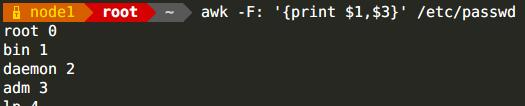
FS，输入分割符
示例：
awk -v FS=":" '{print $1,$3}' /etc/passwd
fs=:
awk -v FS=$fs '{print $1,$3}' /etc/passwd
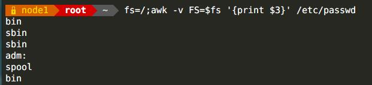
OFS，输出分隔符，默认为空格
示例：
awk -v OFS=":" '{print $1,$3}' /etc/passwd
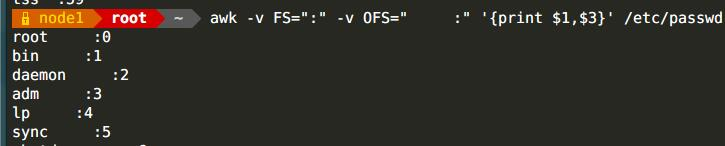
RS，输入行的分隔符，默认为\n
示例：
awk -v RS=: '{print $0}' /etc/passwd
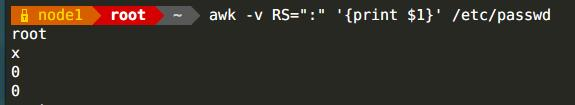
ORS，输出的行的分隔符
示例：
awk -v FS=";" -v RS=":" -v ORS="+++" '{print $0}'
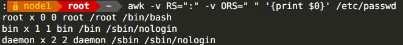
NF，字段数量
示例:
awk -F: '{print NF}' /etc/passwd
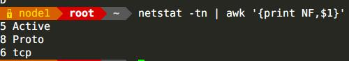
$NF，表示最后一个字段
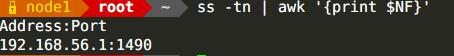
NR，行的编号
示例：
awk -F: '{print NR,$1}' /etc/passwd
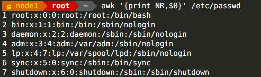
FNR，每个文件单独行编号
示例：
awk -F '{print FNR,$1}' /etc/passwd /etc/fstab
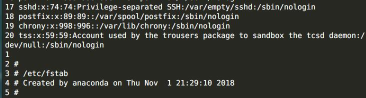
ARGC，参数的个数
示例：
awk '{print ARGC}'/etc/fstab /etc/inittab
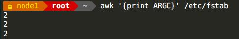
ARGV，命令行中的各参数
示例
awk '{print ARGV[1]}' /etc/passwd /etc/shadow
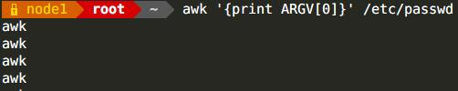
awk自定义变量
自定义变量(区分字符大小写)
1. -v var=value
2. 在program中直接定义
示例：
awk -v name="shuinoo" {print name,$1} /etc/fstab
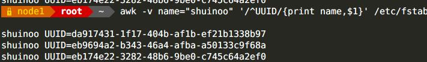
awk的简单使用
awk '{print $0}' /etc/passwd
结果：打印文件的所有内容
awk '{print "abc" $0}' /etc/passwd
如果要打印字符串，则需要加"" 如需要使用变量则无需加""
awk 'BEGIN{print "1+2"}{print $0}END{print "end"}' /etc/passwd
df | awk -F"[[:space:]]|%" '/\dev\/sd/{print $1,$5}'
取出设备名和硬盘使用率
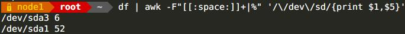
awk -F: '{print $1,$3}' /etc/passwd
awk -F"[[ ]" '{print $5}' /var/log/httpd/access_log
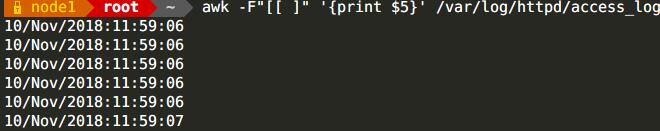
awk printf命令
printf "format"，item1，item2，...
1. 必须指定format
2. 不自动换行
3. 需分别为每个item指定格式符
格式符：
%c，显示字符ascii
%s，显示字符串
%f，显示浮点数
%d，显示十进制
%u，显示无符号整数
%g，显示科学计数法
%%，显示%自身
修饰符：
#[.#]，第一个显示宽度，第二个#表示小数点后精度
默认为右对齐，可以使用-变成左对齐
+ 显示数值正负符号
awk 操作符
算术操作符：+ - * / ^ %
示例：
awk 'BEGIN{print 2^3}'
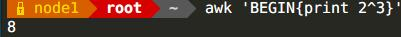
赋值操作符：= += -= *= /= %= ^= ++ --
示例：
awk 'BEGIN{i=0;print ++i,i}'
++i，先自加i，然后输出i
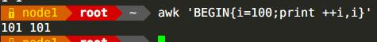
awk 'BEGIN{i=0;print i++,i}'
i++，先输出i，在自加i
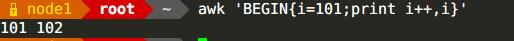
逻辑操作符：&& || ！
示例：
awk -F： '!($3<=1000){print $1,$3}' /etc/passwd
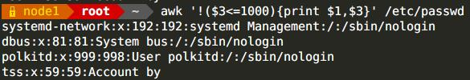
比较操作符：== != > >= < <=
示例：
awk 'BEGIN{i=6;if(i==5)print "equal";else print "no equal"}'
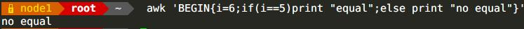
示例：
awk -F: '$3>=0&&$3<=1000{print $1,$3}' /etc/passwd
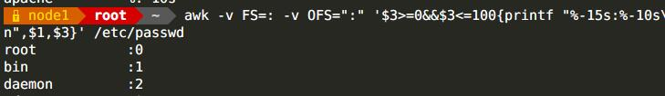
模式匹配符：
~ 左边是否和右边匹配
!~ 是否不匹配
示例：
awk -F: '$3 ~/xfs/{print $0}' /etc/fstab
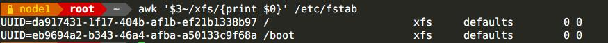
条件表达式：
selector?if true Expr;if false Expr
示例：
awk -F：{$3>=100?user="comon user":user="sys user";printf "%-15s:%-10s\n",$1,user}' /etc/passwd
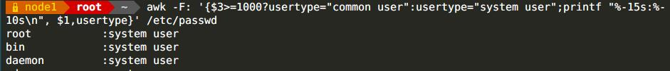
awk pattern
1. 空模式，匹配每一行
2. /Regex/，仅处理能够匹配到的行
3. 关系表达式
真，结果为非0，非空字符串
假，结果为空字符串或0
4. 行范围
5.BEGIN、END
BEGIN，仅在开始处理文件文本之前执行一次
END，仅在文本处理后执行一次
示例：
awk -F: 'NR>=10 && NR<=20{print $1}' /etc/passwd
awk -F '/^UUID/{print $0}' /etc/fstab
seq 10 | awk 'i=1'
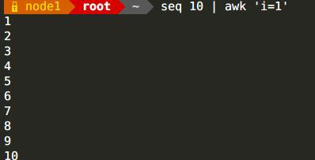
seq 10 | awk 'i=!i'相当于 seq 10 | awk -v i=0 'i=!i'
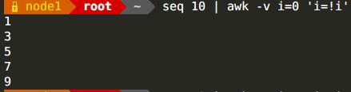
seq 10 | awk -v i=11 'i=!i'相当于 seq 10 | awk '!(i=!i)'
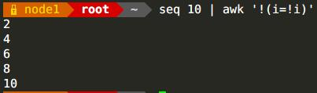
awk if-else
if(判断条件){语句1;...}[else{语句}]
if(判断条件){语句1;...}else if(判断条件2){语句2...}else{语句3}
示例：
awk -F: '{if(NF>5)print $0}' /etc/passwd
ifconfig | awk -F: '{if(NR==2)print $2}'
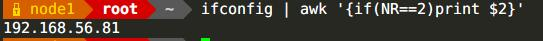
awk -F: -v OFS=: '{if($3>=100)print $1,$3}' /etc/passwd
awk 'BEGIN{score=80;if(score<=60){print "is fall"}else if(score>=80){print "OK"}else{print "good"}}'
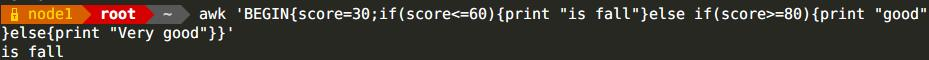
awk while
while(判断条件){语句}
示例：
awk 'BEGIN{i=0;sum=0;while(i<=100){sum+=i;i++};print sum}'
awk '{i=1;while(i<NF){print length($i);i++}}' /etc/issue
/etc/issue每个字段的长度
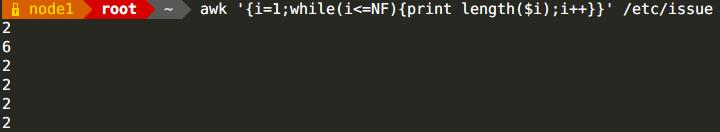
awk '/^[[:space:]]*linux16/{i=1;while(i<=NF){print $i,length($i);i++}}' /etc/grub2.cfg
显示/etc/grub2.cfg的包含linux16的行的每个字段及每个字段的长度
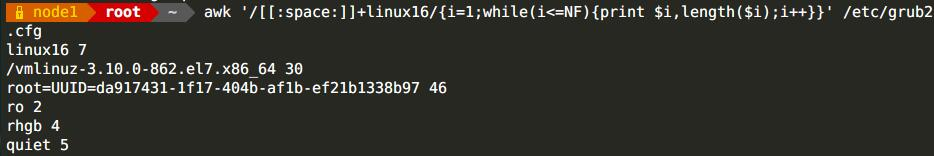
awk do-while
do{语句;...}while(判断条件)
无论真假，至少执行一次循环体
示例：
awk 'BEGIN{total=0;i=0;do{total+=i;i++;}while(i<=100);print total}'
awk for
for(expr1;expr2;expr3){语句;...}
示例：
awk 'BEGIN{for(i=0;i<=100;i++){total+=i};print total}'
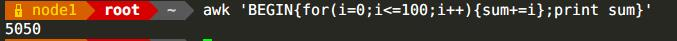
awk switch
switch(判断条件){case VALUE1 or /REGEXP/:语句1;case VAULE2 or /REGEXP/:语句2;default:默认语句}
awk break&continue
awk -v total=0 'BEGIN{for(i=0;i<=100;i++){if(i==50)continue;total+=i};print total}'
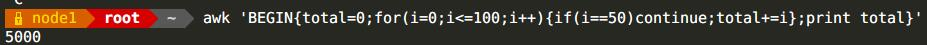
awk -v total=0 'BEGIN{for(i=0;i<=100;i++){if(i==66)break;total+=i};print total}'
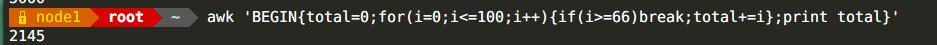
awk 数组
关联数组：array[索引]
索引：
1. 可使用任意字符串，字符串使用双引号
2. 如某数组元素事先不存在，在引用时，awk会自动创建此元素，并将其值初始化“空串”
3. 判断数组是否某元素，要使用“index in array”格式遍历
遍历数组每个元素，要使用for循环
for(变量 in 数组){循环体}
示例：
awk 'BEGIN{title["ceo"]="mage";title=["coo"]="zhangsir";print title["ceo"]}'
awk '{ip[$1]++}END{for(i in ip)print i,ip[i]}}' /var/log/httpd/access_log
统计/var/log/httd/access_log每个IP的访问数量
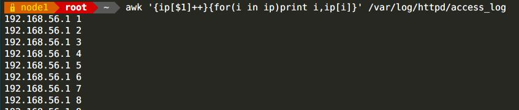
ss -nt | awk -F "[[:space:]]+|:" '/ESTAB/{ip[$(NF-2)]++}END{for(i in ip);print i;ip[i];}'
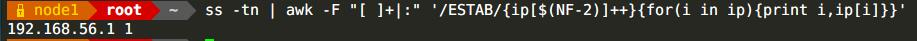
生成1000个以,分隔的随机数，求出最大值和最小值
for i in {1..1000};do if [ $i -eq 1000 ];then echo -e "$RANDOM\c" >> num.txt ;else echo -e "$RANDOM,\c" >> num.txt;fi;done
awk -F"," '{i=1;max=$1;min=$2;while(i<=NF){if(max>$i){max=$i}else if(min<$i){min=$i};{print "max=" max,"min=" min}}}' num.txt
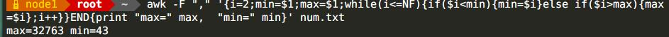
awk 自带函数
rand()，生成0和1之间的随机数
示例：
awk 'BEGIN{srand();for(i=1;i<=3;i++)print rand()}'
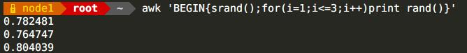
length(s)，返回字符串s的长度
示例：
awk '{for(i=1;i<=NF;i++){print $i,length($i)}' /etc/issue
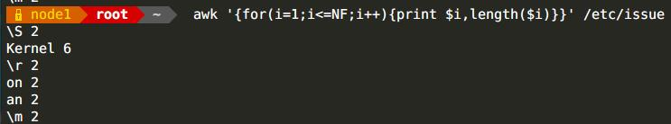
sub(r,s,[t])，对t字符串搜索r匹配到的内容，并将第一次匹配到s的替换成s
示例：
echo "2018:11:18 15:08:09" | awk 'sub(":", "-" ,$2)'
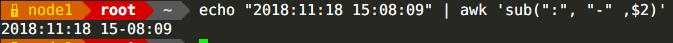
gsub(r,s,[t])，同上，所不同的是替换时将全部替换
示例：
echo "2018:11:18 15:08:09" | awk 'gsub(":", "-" ,$2)'
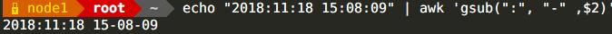
split(s,array,[r])，以r为分隔符，切割字符串s，并将切割后的字符串保存到array数组中，第一个索引值为1，以此类推...
示例：
netstat -tn | awk '/tcp\>{split($5,ip,":");count[ip[1]]++}END{for(i in count){print i,count[i]}}'
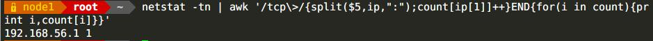
awk 自定义函数
函数名 (形参1,形参2,...) {
语句
return expression
}
示例：
function max(x,y) {
x>y?var=x:var=y
return var
}
BEGIN{a=3;b=2;print max(a,b)}
awk中调用shell命令
system命令
示例：
awk 'BEGIN{system("ls /")}'
awk 脚本
可以将awk语句写成脚本，使用-f选项读入或执行
示例：
cat f.awk
{ip[$1]++}END{for(i in ip)print i;ip[i]}}
awk -f f.awk /var/log/httpd/access_log
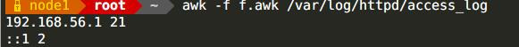
向awk脚本传递参数
AWKFILE.awk var1=value1 var2=value2 ... Inputfile
注意：在BEGIN过程中不可用。直到首行输入完成以后，变量才可用。可以通过-v 参数，让awk在执行BEGIN之前得到变量的值。命令行中每一个指定的变量都需要一个-v参数
示例：
cat test.awk
#!/bin/awk –f
{if($3 >=min && $3<=max)print $1,$3}
chmod +x test.awk
test.awk -F: min=100 max=200 /etc/passwd
示例
文件ip_list.txt如下格式，请提取” .magedu.com” 前面的主机名部分并写入到回到该文件中
1 test.sina.com.cn
2 music.sina.com.cn
3 sports.sina.com.cn
4 news.sina.com.cn
5 blog.sina.com.cn
6 weather.sina.com.cn
7 auto.sina.com.cn
awk -F"." '{print $1}' ip.txt | cut -d" " -f2 >> ip.txt
统计/etc/fstab文件中每个文件系统类型出现的次数
awk '/^UUID/{filesystem[$3]++}END{for(i in filesystem){print i,filesystem[i]}}' /etc/fstab
统计/etc/fstab文件中每个单词出现的次数
grep -Eo "\<[[:alpha:]]+\>" /etc/fstab | awk '{word[$0]++}END{for(i in word){print i,word[i]}}'
提取出字符串Yd$C@M05MB%9&Bdh7dq+YVixp3vpw中的所有数字
echo "Yd$C@M05MB%9&Bdh7dq+YVixp3vpw" | awk 'gsub("[[:alpha:]]|[[:punct:]]", "", $1)'
解决DOS攻击生产案例：根据web日志或者或者网络连接数，监控当某个IP并发连接数或者短时内PV达到100，即调用防火墙命令封掉对应的IP，监控频率每隔5分钟。防火墙命令为：iptables -A INPUT -s IP -j REJECT
awk '{ip[$1]++}END{for(i in ip){if(ip[i]>=100){system("iptables -A INPUT -s i -j REJECT")}}}' /var/log/httpd/access_log
将以下文件内容中FQDN取出并根据其进行计数从高到低排序
http://mail.magedu.com/index.html
http://www.magedu.com/test.html
http://study.magedu.com/index.html
http://blog.magedu.com/index.html
http://www.magedu.com/images/logo.jpg
http://blog.magedu.com/20080102.html
awk -F "/." '{print $2}' fqdn.txt | sort | uniq -c | sort -nr
将以下文本以inode为标记，对inode相同的counts进行累加，并且统计出同一inode中，beginnumber的最小值和endnumber的最大值
inode|beginnumber|endnumber|counts|
106|3363120000|3363129999|10000|
106|3368560000|3368579999|20000|
310|3337000000|3337000100|101|
310|3342950000|3342959999|10000|
310|3362120960|3362120961|2|
311|3313460102|3313469999|9898|
311|3313470000|3313499999|30000|
311|3362120962|3362120963|2|
输出的结果格式为：
310|3337000000|3362120961|10103|
311|3313460102|3362120963|39900|
106|3363120000|3368579999|30000|
1 | #!/bin/awk -f |